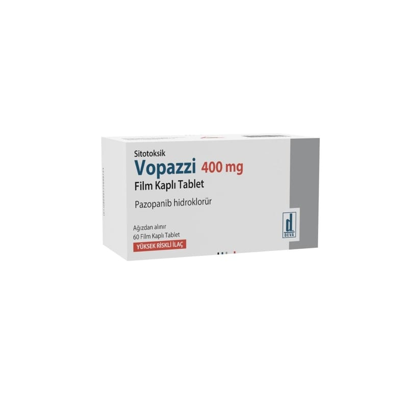

Vopazzi 400 mg Film Kaplı Tablet, 60 Adet

Ne için kullanılır
KT · Bölüm 1VOPAZZİ protein kinaz inhibitörleri grubundan pazopanib hidroklorür adlı etkin maddeyi içeren bir kanser ilacıdır. Bu ilaç etkisini kanser hücrelerinin büyümesi ve yayılmasında etkili olan proteinlerin etkilerini önleyerek göstermektedir. • VOPAZZİ, beyaz renkli, oval, film kaplı tablettir. Her kutuda 60 adet film kaplı tablet bulunmaktadır. • VOPAZZİ, − daha önce herhangi bir VEGF-TKI (Vasküler endotelyal büyüme faktörü-Tirozin kinaz inhibitörü) kullanmamış ameliyat ile çıkarılamayan (rezeke edilemeyen) ilerlemiş böbrek kanseri (lokal relaps veya metastatik renal hücreli kanser) olan hastalarda tek ilaç olarak tümörde ilerleme (progresyon) görülene kadar kullanımda endikedir. − vücudun bağ dokusunu etkileyen bir kanser türü olan yumuşak doku sarkomunun bazı alt tiplerinde tek ilaç olarak kullanılır. Daha önce ilerlemiş yumuşak doku sarkomu için en az bir seri kemoterapi ya da en fazla iki seri kemoterapi kullanmış ve sonrasında tümörde Bu ilacı kullanmaya başlamadan önce bu KULLANMA TALİMATINI dikkatlice okuyunuz, çünkü sizin için önemli bilgiler içermektedir. • Bu kullanma talimatını saklayınız. Daha sonra tekrar okumaya ihtiyaç duyabilirsiniz. • Eğer ilave sorularınız olursa, lütfen doktorunuza veya eczacınıza danışınız. • Bu ilaç kişisel olarak sizin için reçete edilmiştir, başkalarına vermeyiniz. • Bu ilacın kullanımı sırasında, doktora veya hastaneye gittiğinizde doktorunuza bu ilacı kullandığınızı söyleyiniz. • Bu talimatta yazılanlara aynen uyunuz. İlaç hakkında size önerilen dozun dışında yüksek veya düşük doz kullanmayınız.
ilerleme (progresyon) görülmüş hastaların kullanımında endikedir. Yumuşak doku sarkomu organları destekleyen, çevreleyen ve koruyan kaslarda, kan damarlarında, yağ dokularında veya diğer dokularda meydana gelebilir.